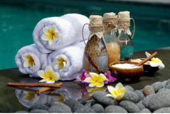
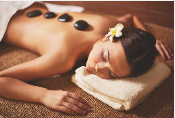
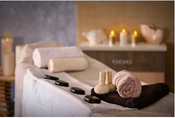
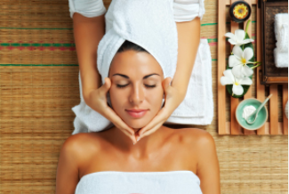

Zwembad + Bubbelbaden
-
Ons zwembad telt 30 strandstoelen. Om
het makkelijk voor je te maken worden
er handdoeken aangeboden aan de
ingang van het zwembad. Bij het zwembad
is er ook een ober aanwezig die u gratis
drankjes serveerd. -
Ons aanbod telt meerdere bubbelbaden.
Dit zorgt ervoor dat er altijd voldoende
plaats is voor iedereen. Net zoals bij het
zwembad is er hier ook een ober aanwezig


Hotstonemassage
-
Een hotstonemassage wordt vaak
gezien als een variant van de
Zweedse ontspanningsmassage -
Een hotstonemassage draagt bij aan
het zelfherstel van het lichaam
en helpt spanning in de spieren
te verminderen.
Lomi Lomi-massage
-
Een Lomi Lomi-massage is een
ontspanningsmassage en is erg spiritueel
georiënteerd. -
Deze massagevorm heeft een positief effect
op zowel je mentale als fysieke welzijn


Balinese Massage
-
Een Balinese massage kan gezien worden als
een soort mengsel van verschillende
massagetechnieken die zijn samengevoegd
tot een nieuwe massagevorm -
Bij de massage wordt vaak gebruikt gemaakt
van kokosolie, dit helpt om het lichaam
volledig te doen ontspannen